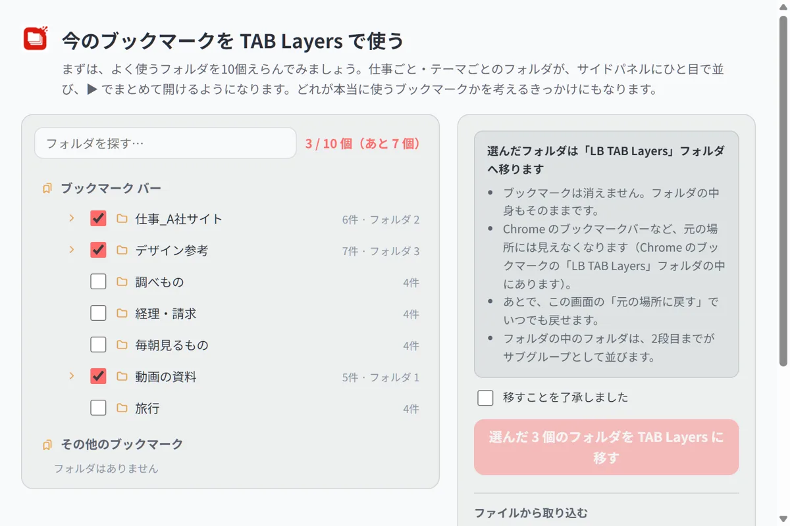
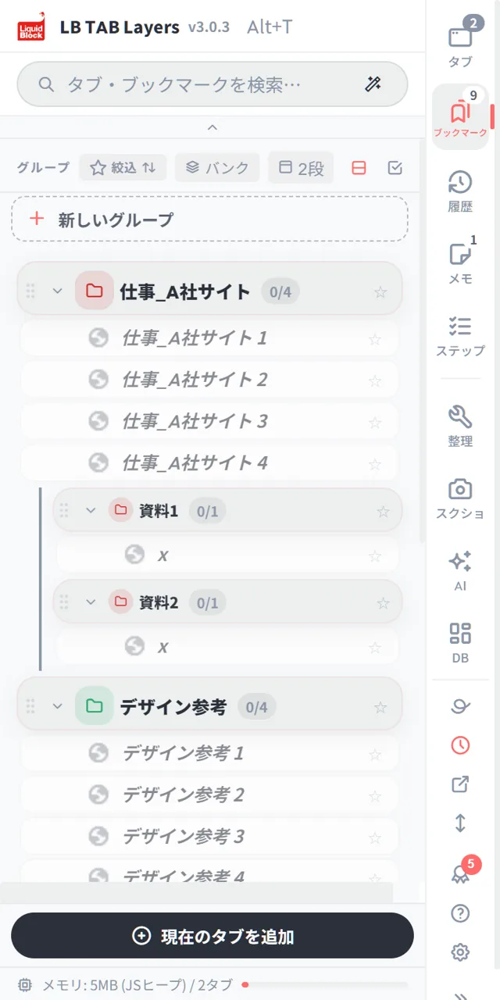

3.0.3 のテーマは「入れてすぐ使えて、消す理由がない拡張」です。今のブックマークをそのまま TAB Layers で使う入口、できることを順に教えるバッジ、オンライン打合せで画面に書いて伝える「消えるペン」、ページの端に出すファビコンだけの細い列、ステップタスクのアーカイブなどを加えました。拡張機能を何個も入れてブラウザを重くしないよう、タブとブックマークの管理から自然につながる機能を1つにまとめ、使うときだけ動く作りにしています。3.0.3 は Chrome ウェブストアで配信しています。
こんにちは、LB開発チームです。この記事は、LB TAB Layers 3.0.3 を作った1日の記録です。いつもの「アップデートのお知らせ」ではなく、何を考えて、どこでつまずいて、どう直したかを書きます。
📌 3.0.3 は、Chrome ウェブストアで配信しています。入れている Chrome では、自動で更新されます。機能のくわしい紹介は「機能紹介」にまとめました。
結論：3.0.3 は「最初の5分」と「消さない理由」の版
3.0.3 で目指したのは、次の2つです。
| 目標 | やったこと |
|---|---|
| 入れてすぐ使える （最初の5分） | 今のブックマークを TAB Layers で使う入口、できることを順に案内するバッジ、クイックチュートリアルの最初の手順 |
| 消す理由がない （毎日の小さな便利） | 消えるペン、ファビコンだけの細い列（どちらも無料）、ステップタスクのお祝いとアーカイブ、再生中の欄の作り直し |
代表の言葉でいうと、「初心者でも困っている人でも、すぐに導入しやすいと感じてもらいたい」。そして、「消す理由がないなと思ってもらって、拡張機能がブラウザの中に残るようにしたい」。この2つを、1日の判断の物差しにしました。
なぜ多機能にしたのか：拡張機能を入れすぎると、ブラウザが重くなるから
3.0.3 は、機能がかなり増えた版です。「タブ管理の拡張なのに、なぜペンや音量まで？」と思われるかもしれません。理由ははっきりしていて、拡張機能を入れすぎると、ブラウザが重くなるからです。
やりたいことごとに拡張を入れると、10個近くになる
タブを整理する拡張、メモの拡張、スクリーンショットの拡張、タブごとに音量を変える拡張、画面に書き込む拡張……。やりたいことごとに1つずつ入れると、すぐに10個近くになります。拡張はそれぞれが Chrome の中で動き、数が増えるほど重くなりやすく、ツールバーや右クリックのメニューもあふれていきます。私たち自身、仕事の Chrome がそうなっていました。
タブとブックマークの管理から「ついでに必要になるもの」を、1つにまとめた
そこで LB TAB Layers では、タブとブックマークの管理から自然につながる機能だけを、1つの拡張の中に入れていきました。思いつきで足すのではなく、起点はいつもタブとブックマークです。
| 起点（タブ・ブックマークで、すること） | そこから必要になったもの |
|---|---|
| 動画や音の出るタブを開いている | 再生中の欄（タブごとの音量・再生位置・小窓） |
| ページを保存する | ページやグループにひもづくメモ、NotebookLM や AI に渡す |
| 仕事ごとにグループを作る | ステップタスク（仕事を1時間ほどの工程に分ける） |
| 見ているページを人に見せる | スクリーンショットと修正指示書、消えるペン |
| たくさんのタブを行き来する | ファビコンだけの細い列、最近閉じたタブの検索 |
多機能でも、使わないものは動かさない
1つにまとめても、全部がいつも動いていては意味がありません。そこで、使うときだけ動く作りにしています。消えるペンは、押したときだけそのページに入ります。細い列は、設定でオンにするまで出ません。新しい見え方も、最初はオフです。拡張を何個も入れる代わりに、必要なものを必要なときだけ。これが、私たちが多機能を選んだ理由です。
開発の進め方：触って見つけたことを、その場で投げる
私たちの開発は、少し変わった進め方をしています。代表が、作業中の版を自分の Chrome に入れて、ふだんの仕事で使います。気になったことがあれば、スクリーンショットを付けてすぐに開発チームへ送ります。開発チームはそれを直して、また触ってもらいます。
この日に届いた「気になったこと」は、30件を超えました。そのうちのいくつかを紹介します。
【実体験】「YouTube のタブを閉じたら小窓も落ちる。じゃあ意味ないじゃん」
3.0.3 で入る「再生中の欄」には、動画を小さな窓で見る「小窓」があります。ところが代表が試すと、YouTube のタブを開いていると小窓で再生されず、タブを閉じると小窓も一緒に消えてしまいました。届いた一言は「じゃあ意味ないじゃん」。そのとおりです。
原因は、小窓が「元のタブの中の動画を映しているだけ」だったことです。元のタブがなくなれば、映すものもなくなります。そこで作り方を変えました。
- タブそのものを、小さな窓に移す。動画のページがまるごと小窓に入るので、元のタブを閉じる心配がありません。YouTube では、動画だけが見えるように表示を整えます。
- 「元に戻す」で、もとのウィンドウへ戻せる。
同じ日に、「パネルのシークバーと、プレイヤーのシークバーがつながっていない」という指摘も届きました。長いバーは音量で、再生位置を動かすバーがなかったのです。3.0.3 では、パネルの中に再生位置のバー・再生と一時停止・音量を並べ、YouTube のプレイヤーと両方向で合うことを確かめました。音だけのページでも再生位置のバーが出ます。音を下げたいタブを、わざわざ開いて触る必要もありません。
【実体験】「メダルの『試す』を押したら、意味の違うページに飛んだ」
3.0.3 には、できることを順に案内するバッジを入れました。機能を初めて使うと小さなお祝いが出て、「次は：○○」と次の機能を教えてくれます。ゲームのように、導かれながら機能を知っていける流れです。
ところが、すでに使っている代表がバッジの「試す」を押すと、「今のブックマークを TAB Layers で使う」画面にいきなり飛びました。もうたくさんのブックマークを使っている人に、取り込みの画面を出すのは筋が違います。
直したのは2点です。
- 取れる条件を見直す。取り込んだ人だけでなく、すでにブックマークを10個しまっている人も、そのバッジを取れるようにしました。
- 勝手に画面を移らない。「試す」を押すと、まず説明と「取り込む画面を開く」ボタンを出します。開くかどうかは、使う人が決めます。
バッジの色にも意味を持たせました。銅はすぐに使う機能、銀は使ってほしい機能、金はなかなか使わない機能です。ブックマークの数（10〜1000個）や、開いたタブの数（100〜10000）の節目にもバッジがあります。すでに使っている人は、今の状態が黙ってバッジになり、お祝いは出ません（バッジ帳のチェックで出すこともできます）。
【実体験】「ここの色、違うサイトを見てるみたい」
「今のブックマークを TAB Layers で使う」画面を見た代表の感想です。サイドパネルは選んだテーマの色なのに、取り込みの画面だけ別の色でした。同じ道具なのに、違うサイトに来たように感じる。小さなことですが、はじめて使う人ほど不安になります。
3.0.3 では、取り込みの画面・画像の一覧・修正指示書などの別の画面も、選んでいるテーマの色に合わせました。あわせて、背景・文字・アクセントの3色を自分で決めるオリジナルのテーマ（PRO）も作りました。読みにくい組み合わせのときは、自動で直す案内が出ます。
はじめの一歩：今のブックマークを、そのまま TAB Layers で使う
「入れてすぐ使える」のいちばんの近道は、すでにあるブックマークを使うことです。新しく何かを作らなくても、ふだん使っているフォルダがそのままグループになれば、その日から役に立ちます。

- Chrome のブックマークのフォルダを選んで、「LB TAB Layers」のフォルダへ移します。ブックマークは消えません。
- 目安は10個。よく使うフォルダから選びます（無料版はグループ5つまで）。
- 「元の場所に戻す」で、いつでも元の場所へ戻せます。
- 大画面（ダッシュボード）でも、Chrome のブックマークフォルダを右クリックして、フォルダごと移せるようにしました。

この手順は、クイックチュートリアルのいちばん最初にも「まずは」として加えました。
「消す理由がない」機能は、無料にした
この日、代表は2つの新しい機能を無料にすると決めました。理由は「消す理由がないなって思ってもらって、拡張機能がブラウザ内に残るようにしたいから」です。
消えるペン — オンライン打合せで、画面に書いて伝える
画面共有をしながら「ここです、ここ」と言っても、相手にはどこか分かりません。消えるペンは、見ているページの上にその場で丸や線を書いて、少しすると消えるペンです。レーザーポインターの代わりに使えます。
- Alt+Shift+D、ページの右クリック、またはパネルの上のボタンで出します。
- 「残るペン」に切り替えると、「すべて消す」まで残ります。
- 「ページを操作」で、ペンを止めて下のページ（動画の再生ボタンなど）を触れます。
- 書いた内容は、保存も送信もしません。
ファビコンだけの細い列 — 大きな画面を広く使う
Chrome のサイドパネルは、ある幅より細くできません。そこで、ページの端に、ファビコン（サイトの小さな絵）だけを並べた細い列を出せるようにしました。押すとそのタブへ移り、いちばん上からサイドパネルも開けます。設定でオンにしたときだけ出ます（最初はオフ）。ページの内容は読みません。
ステップタスク：終わったら、祝って、しまって、振り返る
ステップタスク（PRO・お試し中は使えます）は、仕事を1時間ほどのステップに分けて進める機能です。代表からの注文は「全部のステップを終えたら、小さくしまって、日付のついた状態でどこかに残してほしい。振り返りのメモも書きたい」でした。
- タスクを終えると、小さなお祝いが出ます。完了の数や続けた日数にはメダルもあります。
- 終わったタスクは小さくたたまれ、アーカイブに移せます（取り消しもできます）。
- アーカイブは日付ごとに並び、Markdown や CSV で書き出せます。
- タスクごとに振り返りのメモを残せます。
ほかにも入ったもの
| 変更 | 内容 |
|---|---|
| メモのひもづけ | 1つのメモを、ページとグループの両方にひもづけられる。グループの見出しにメモの印が出る |
| 2段で見る | バンクを1段目、グループを2段目のタブとして並べ、選んだグループだけを下に出す（最初はオフ） |
| 大画面のボード | すべてのグループをカードで一覧。開いているタブをカードへドラッグして保存 |
| 最近閉じたタブ | 検索から、最近閉じたタブ（最大50件）を探せる。自分のパソコンの中だけで、シークレットは記録しない |
| 単独タブをまとめるとき | グループの名前に日時が入る（例：2026年11月9日 14:30） |
| 15言語 | イタリア語・オランダ語・ポーランド語・トルコ語・ロシア語・簡体字中国語・ヒンディー語を追加 |
最後に：全体のバグ確認と、いまの状態を変えないこと
機能を足した日ほど、見えないところが壊れやすくなります。この日の終わりに全体を見直し、21件の不具合を直しました（取り込みを戻したあとのグループ、ファイル取り込みの取り消し、フォーカスタイマーの画面、Esc キーなど）。自動のテストは374件、すべて通っています。
もう1つ大事にしているのは、今使っている人の設定を勝手に変えないことです。新しい見え方（2段で見る、細い列など）は、最初はオフか、新しく入れた人だけに当てています。アップデートした翌日に画面が変わっていて戸惑う、ということがないようにしています。
3.0.3 は、Chrome ウェブストアで配信しています。触って「ここが分かりにくい」と思ったことがあれば、ぜひ教えてください。この記事のように、その日のうちに直していきます。
🎬 いま使える機能は、こちらから。パネルを開く、保存したタブを開く、閉じたタブを履歴から戻す、ページにひもづけたメモ、ピンバーまで。ブラウザとパネルの動きをそのまま見られる 操作ガイド（動く画面で見る10の操作） にまとめています。入れたばかりの方は クイックチュートリアル（5分） からどうぞ。
よくある質問
Q. タブ管理の拡張なのに、なぜ機能が多いのですか？
拡張機能を入れすぎるとブラウザが重くなりやすいからです。やりたいことごとに拡張を入れる代わりに、タブとブックマークの管理から自然につながる機能（音量、メモ、スクリーンショット、画面に書くペンなど）を1つにまとめました。ペンや細い列などは、使うときだけ動きます。
Q. LB TAB Layers 3.0.3 は、いつから使えますか？
3.0.3 は Chrome ウェブストアで配信しています。入れている Chrome では、自動で更新されます。すぐに更新したいときは、拡張機能の管理画面（chrome://extensions）で「更新」を押してください。
Q. 消えるペンとファビコンだけの細い列は、無料ですか？
はい、どちらも無料です。「消す理由がない」と感じてもらえる、毎日の小さな便利として無料にしました。
Q. 今のブックマークを TAB Layers に移すと、ブックマークは消えますか？
消えません。選んだフォルダを「LB TAB Layers」のフォルダへ移すだけで、中身はそのままです。取り込みの画面の「元の場所に戻す」で、いつでも元の場所へ戻せます。
Q. アップデートすると、今の画面や設定は変わりますか？
変わりません。2段で見る、細い列などの新しい見え方は、最初はオフになっています。使いたいときに、設定や見出しのボタンからオンにしてください。
▶ 実際の操作を動画で見る
サイドバーで、ブックマークとタブをいっしょに管理する様子です。